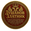

Водич за MetaMask и BNB Smart Chain
1. Инсталација крипто новчаника MetaMask-а 
Преузмите и инсталирајте MetaMask према уређају који користите:
- iOS (App Store)
- Android (Google Play)
- Chrome / Brave екстензија (Windows/Mac)
- Званични сајт за све платформе
Након инсталације, покрените апликацију и креирајте нови новчаник пратећи упутства унутар апликације. Обавезно сачувајте своју „seed“ фразу (тајни опоравак код) на сигурном месту – она је кључ за приступ вашем новчанику.
2. Додавање BNB Smart Chain мреже
Отворите MetaMask, идите на Подешавања → Мреже → Додај мрежу. Можете аутоматски додати BNB Smart Chain преко Chainlist кликом на „Add to MetaMask“, или ручно унесите следеће параметре (извор: Binance Academy):
- Network Name: BNB Smart Chain
- New RPC URL: https://bsc-dataseed.binance.org/
- Chain ID: 56
- Currency Symbol: BNB
- Block Explorer URL: https://bscscan.com
3. Додавање токена Душанов Златник
Након што сте пребацили MetaMask на BNB Smart Chain мрежу, кликните на дугме „Увези токен“ и ручно унесите следеће податке:
- Token Contract Address: 0x27a81dce6f4bd0f2a6f3c17e195ecdb773051a00
- Симбол: ZLATNIK
- Децимале: 18
За проверу тачности података, посетите званични BscScan профил токена.
Након успешног додавања, токен „Душанов Златник“ биће приказан у вашем MetaMask новчанику.
Последње ажурирање: јул 2025.